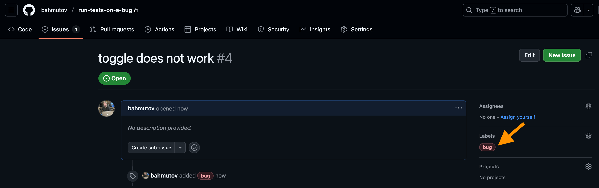
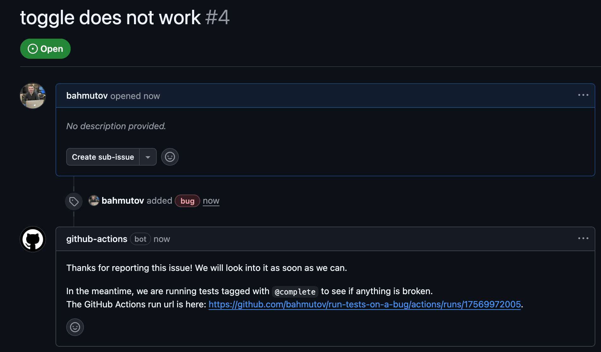
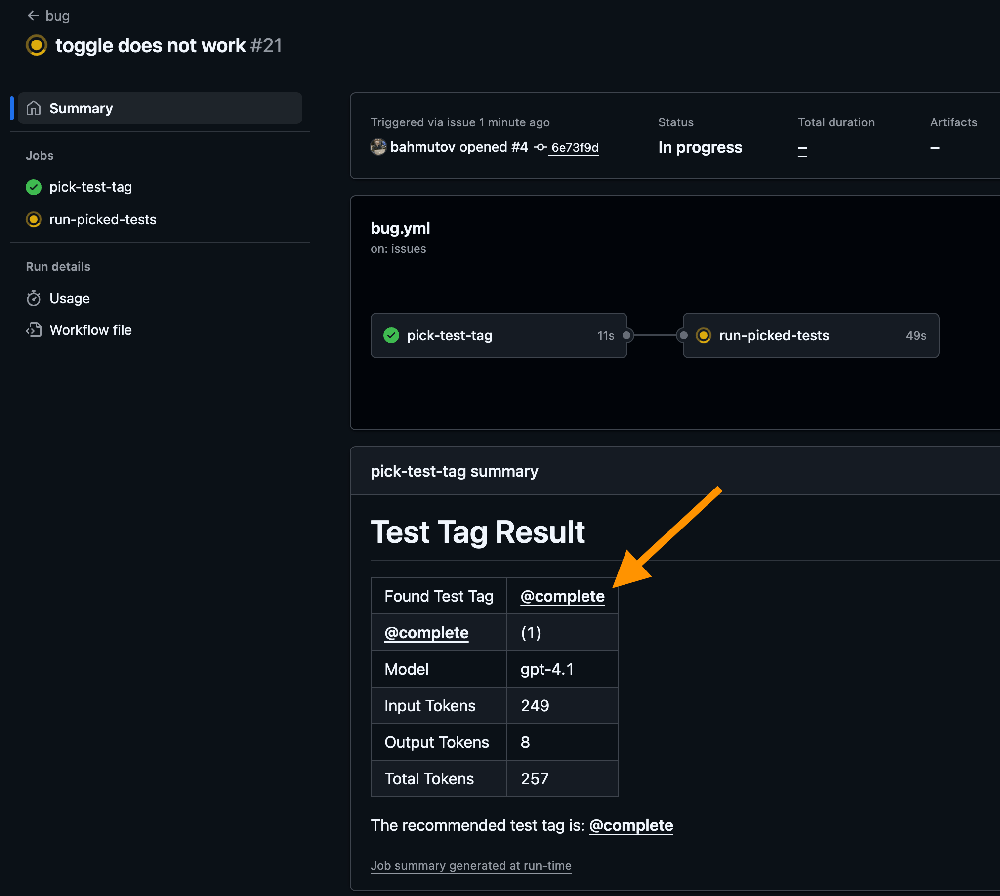
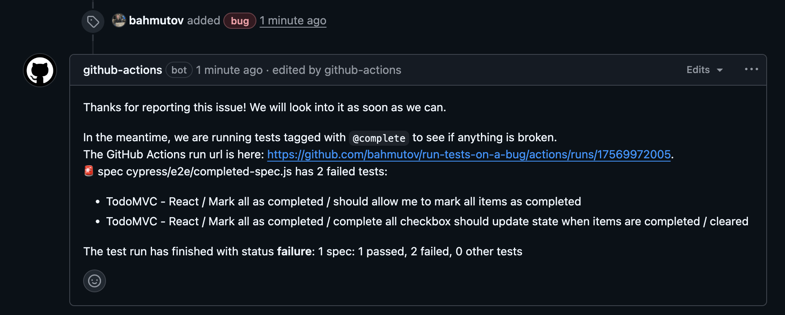
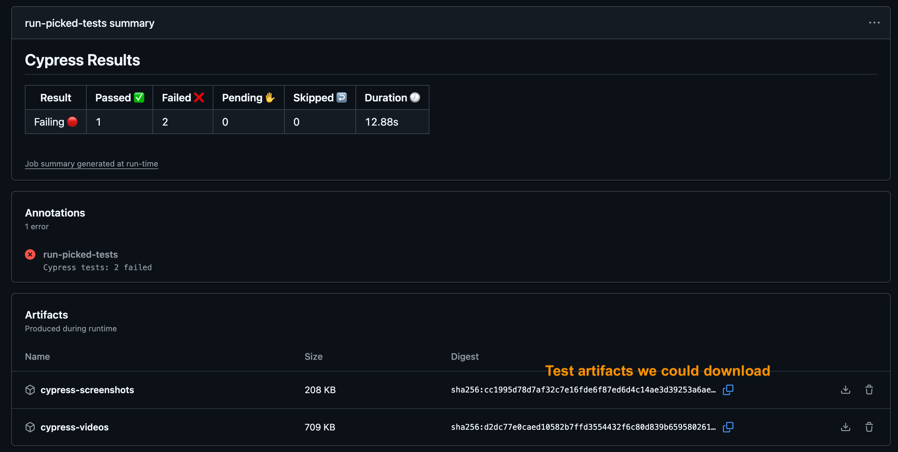
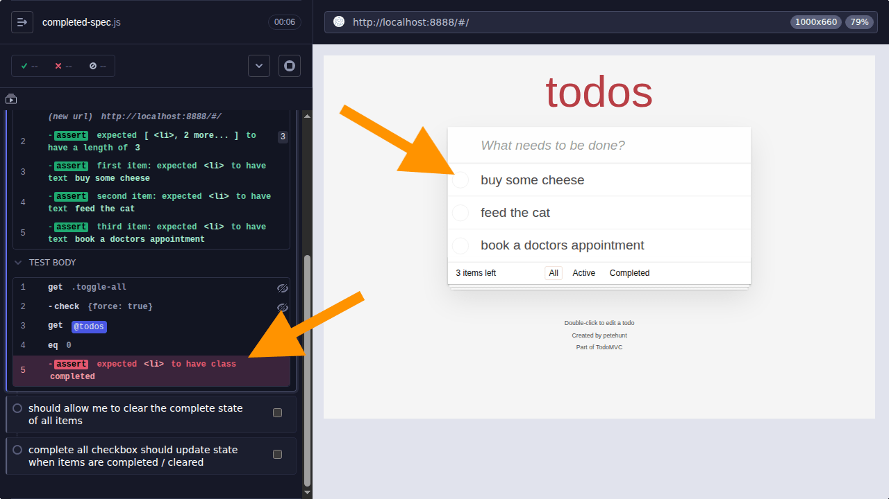

Let AI pick a test tag and run end-to-end tests when the user opens a GitHub bug issue.
In the blog post Test Tag Suggestions Using AI I described a system to pick a testing tag based on a pull request's title and body text. In this blog post, I will make it useful. Whenever a user opens a GitHub issue and labels it a "bug", an automated workflow will pick an appropriate testing tag (or several) and will execute the tagged Cypress end-to-end tests to give more context to the issue.
The example application
I am using a typical TodoMVC with lots of Cypress end-to-end tests tagged using @bahmutov/cy-grep plugin. You can list all specs with their tags using find-cypress-specs utility.
cypress/e2e/app-spec.js (15 tests) └─ TodoMVC - React ├─ adds 4 todos [@smoke, @add] ├─ When page is initially opened │ └─ should focus on the todo input field ├─ No Todos │ └─ should hide #main and #footer [@misc] ├─ New Todo [@add] │ ├─ should allow me to add todo items │ ├─ adds items │ ├─ should clear text input field when an item is added │ ├─ should append new items to the bottom of the list │ ├─ should trim text input │ └─ should show #main and #footer when items added ├─ Item │ ├─ should allow me to mark items as complete │ ├─ should allow me to un-mark items as complete │ └─ should allow me to edit an item └─ Clear completed button ├─ should display the correct text ├─ should remove completed items when clicked [@smoke] └─ should be hidden when there are no items that are completed
cypress/e2e/completed-spec.js (3 tests) └─ TodoMVC - React └─ Mark all as completed [@complete] ├─ should allow me to mark all items as completed ├─ should allow me to clear the complete state of all items └─ complete all checkbox should update state when items are completed / cleared
cypress/e2e/counter-spec.js (2 tests) └─ TodoMVC - React └─ Counter [@count] ├─ should not exist without items └─ should display the current number of todo items
cypress/e2e/editing-spec.js (5 tests) └─ TodoMVC - React └─ Editing [@edit] ├─ should hide other controls when editing ├─ should save edits on blur [@smoke] ├─ should trim entered text ├─ should remove the item if an empty text string was entered └─ should cancel edits on escape
cypress/e2e/persistence-spec.js (1 test) └─ TodoMVC - React └─ Persistence [@persistence] └─ should persist its data [@smoke]
cypress/e2e/routing-spec.js (5 tests) └─ TodoMVC - React └─ Routing [@routing] ├─ should allow me to display active items ├─ should respect the back button [@smoke] ├─ should allow me to display completed items ├─ should allow me to display all items @smoke └─ should highlight the currently applied filter
found 6 specs (31 tests)
We have a few feature testing tags. Let's count the number of tests by tag
Let's say our application has a bug, somehow we introduced a problem into the "toggle all" function logic. No one caught the problem during the code review, and no one bothered to run the end-to-end tests (🙀)
1 2 3 4 5 6 7 8 9 10 11 12 13
app.TodoModel.prototype.toggleAll = function (checked) { // Note: it's usually better to use immutable data structures since they're // easier to reason about and React works very well with them. That's why // we use map() and filter() everywhere instead of mutating the array or // todo items themselves. this.todos = this.todos.map(function (todo) { - return Utils.extend({}, todo, { completed: checked }) + // introduce an error on purpose by negating the checked value + return Utils.extend({}, todo, { completed: !checked }) })
this.inform() }
Hmm, we have deployed the app with a bug, and soon a user opens a GitHub issue. Knowing the typical user, the level of detail in the GH issue is minimal.

Great. The issue has the title "toggle does not work", an empty body text, and has the label "bug".
The bug workflow
Opening or re-opening an issue labeled "bug" triggers the following GitHub Actions workflow
run-picked-tests: if:contains(github.event.issue.labels.*.name,'bug') needs:pick-test-tag runs-on:ubuntu-24.04 permissions: # this job needs to check out the source code contents:read # give this job permission to comment on the issue issues:write steps: -name:Printissuetitleandsubject run:| echo "Issue title:" echo "${{ github.event.issue.title }}" echo "Issue body:" echo "${{ github.event.issue.body }}" echo "Picked test tag(s)" echo "${{ needs.pick-test-tag.outputs.testTag }}" -name:Commentontheissue📝 # https://github.com/peter-evans/create-or-update-comment uses:peter-evans/create-or-update-comment@v4 id:comment with: issue-number:${{github.event.issue.number}} token:${{secrets.GITHUB_TOKEN}} body:| Thanks for reporting this issue! We will look into it as soon as we can. Inthemeantime,wearerunningteststaggedwith`${{needs.pick-test-tag.outputs.testTag}}`toseeifanythingisbroken. The GitHub Actions run url is here:${{github.server_url}}/${{github.repository}}/actions/runs/${{github.run_id}}.
-name:Checkout🛎 uses:actions/checkout@v5
-name:Runtaggedtests🧪 # https://github.com/cypress-io/github-action uses:cypress-io/github-action@v6 with: # let's see which specs and tests we will run build:npxfind-cypress-specs--names--tagged${{needs.pick-test-tag.outputs.testTag}} start:npmrunstart:ci wait-on:'http://localhost:8888' env: CYPRESS_grepTags:${{needs.pick-test-tag.outputs.testTag}} # put test results into the comment # https://github.com/bahmutov/cypress-set-github-status GITHUB_TOKEN:${{secrets.GITHUB_TOKEN}} COMMENT_ID:${{steps.comment.outputs.comment-id}}
# after the test run completes store videos and any screenshots # https://github.com/actions/upload-artifact -uses:actions/upload-artifact@v4 if:failure() with: name:cypress-screenshots path:cypress/screenshots if-no-files-found:ignore -uses:actions/upload-artifact@v4 if:always() with: name:cypress-videos path:cypress/videos if-no-files-found:ignore
Currently, the example application repo is private. I am thinking how to better open source this work.
The workflow runs only for issues labeled a "bug":
1 2 3
on: issues: types: [opened, reopened]
A response comment appears quickly

There are two jobs in the workflow: "pick-test-tag" followed by "run-picked-tests"
Picking the testing tags
Based on the user's description of the bug (title and body), we want to know if any of the tested features related to the user's report are broken. Because there might be more than a single broken page or user action, we might have a seriously broken app! We want to test everything related to the bug report, and hopefully the test recordings and logs will help us quickly isolate the problem and fix the issue.
To pick the testing tag based on the user's text, I use the following AI script
/** * These are valid test tags used in our test cases, * plus their descriptions */ constTEST_TAGS = { '@smoke': 'Smoke tests - a small set of tests to check the main features', '@misc': 'Miscellaneous unimportant tests', '@add': 'Tests related to adding new todo items to the list', '@edit': 'Tests related to editing existing todo items in the list', '@routing': 'Tests related to routing between different views and pages in the app', '@complete': 'Tests related to completing tasks and checking/unchecking', '@count': 'Tests confirming the count of items on the page is correct', '@persistence': 'Tests related to data persistence: saving and loading items in storage', }
asyncfunctionask(instructions, input, core, client) { // https://platform.openai.com/docs/models // usually gpt-4.1-mini or gpt-4.1 const model = 'gpt-4.1' const response = await client.responses.create({ model, instructions, input, })
// parse test tags and confidence scores // into the variable pickedTestTags
if (pickedTestTags.length === 0) { // if the tag is not in the list, use @sanity console.warn(`Could not pick any known tags. Using @sanity instead.`) pickedTestTags.push({ tag: '@smoke', confidence: 1 }) }
const instructions = `Given the following end-to-end test tags: ${testTagsText} ` + `Determine which test tag is applicable to the following code changes. Return the list of all applicable test tags, one test tag per line. In addition to the test tag, print the confidence score for each tag in parentheses, from 0 to 1, where 1 is the highest confidence. For example: @edit (0.9) @persistence (0.8) @add (0.3) If no test tag is applicable, return "@smoke (1.0)". `
const input = process.env['USER_TEXT'] if (!input) { thrownewError( 'USER_TEXT environment variable is required. This should be a string with the pull request title and body', ) }
let openAiApiKey = process.env['OPEN_AI_API_KEY'] if (!openAiApiKey) { thrownewError('OPEN_AI_API_KEY environment variable is required') }
// output logging into error stream const separator = '=====' console.error('Asking OpenAI using the instructions and input below...') console.error(input) console.error(separator) console.error(instructions) console.error(separator)
/** * This exported function can be called by the GitHub Action * or from the command line. */ module.exports = async ({ core, OpenAI }) => { const client = newOpenAI({ apiKey: openAiApiKey, })
outputs: testTag: description:'Recommended test tag' value:${{steps.find.outputs.testTag}} inputTokens: description:'Number of input tokens used' value:${{steps.find.outputs.inputTokens}} outputTokens: description:'Number of output tokens used' value:${{steps.find.outputs.outputTokens}} totalTokens: description:'Total number of tokens used' value:${{steps.find.outputs.totalTokens}} model: description:'Model used for the request' value:${{steps.find.outputs.model}}
-name:Install**limited**dependencies📦 # only install the packages needed to run the script run:npminstallopenai shell:bash
-name:Determinethetesttag🏷️ id:find # note: this step produces multiple outputs # - testTag # - inputTokens # - outputTokens # - totalTokens # - model # https://github.com/actions/github-script uses:actions/github-script@v8 with: script:| const OpenAI = require('openai') const pick = require('${{ github.action_path }}/pick.js'); await pick({ core, OpenAI }); env: # hopefully the text does not have double quotes USER_TEXT:"${{ inputs.title }}\n\n${{ inputs.body }}"
-name:Printthedeterminedtag🏷️ shell:bash run:| echo"The recommended test tag is: ${{ steps.find.outputs.testTag }}">>$GITHUB_STEP_SUMMARY
Great, so what does it find?

Based on the user's description of the problem "toggle does not work", the LLM picked the testing tag @complete. Its description "Tests related to completing tasks and checking/unchecking" was the best match to the user text. Personally, I found LLMs to be hit or miss for creating new code, but pretty accurate for picking one of the limited number of variants. After all, the second "L" in LLM stands for "language", it better do such semantic language matches well!
I even believe that small local LLMs can solve this "pick the closes text" problem, but don't have any proof.
Running the picked tests
Once we picked just one testing tag @complete with 100% confidence, we execute it using the Cypress GitHub Action that I wrote back in the day. Our project uses my plugin cypress-set-github-status to post the individual spec results back into the original comment:
1 2 3 4 5 6 7 8 9 10 11 12 13 14 15
-name:Runtaggedtests🧪 # https://github.com/cypress-io/github-action uses:cypress-io/github-action@v6 with: # let's see which specs and tests we will run build:npxfind-cypress-specs--names--tagged${{needs.pick-test-tag.outputs.testTag}} start:npmrunstart:ci wait-on:'http://localhost:8888' env: # pass the picked testing tag(s) to the @bahmutov/cy-grep plugin CYPRESS_grepTags:${{needs.pick-test-tag.outputs.testTag}} # put test results into the comment # https://github.com/bahmutov/cypress-set-github-status GITHUB_TOKEN:${{secrets.GITHUB_TOKEN}} COMMENT_ID:${{steps.comment.outputs.comment-id}}
// other config code setupNodeEvents(on, config) { // if needed, write the test results back into a GitHub comment const token = process.env.GITHUB_TOKEN const comment = process.env.COMMENT_ID if (token && comment) { console.log( 'Will write test results into the comment with id %s', comment, ) require('cypress-set-github-status')(on, config, { owner: 'bahmutov', repo: 'run-tests-on-a-bug', token, comment, }) }
// make sure to return the config object // as it might have been modified by the plugin return config }
Once the test results come in, the original issue comment is updated with details: 2 tests failed.

If our project was recording test traces on the Cypress Dashboard, the comment would include a link to the run URL. For now, we simply go to the GitHub Actions run URL and download the screenshots or videos of the test run.

Let's download the screenshots. Hmm, the failed test clicked on the "Toggle All" button, yet each item remained incomplete. The test result points us in the right direction; we should be looking at the JavaScript code that is executed in response to the user's click on the "Toggle All" element.

Great. We automatically ran the relevant tests based on the user's input, collecting lots of information that should help us quickly debug the problem and deploy a fix.